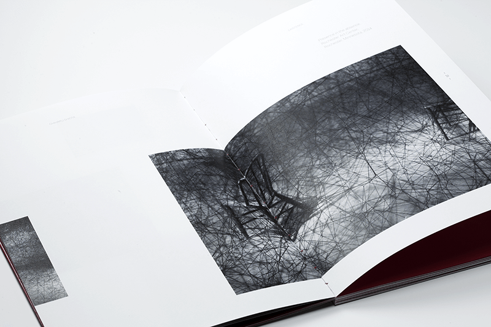
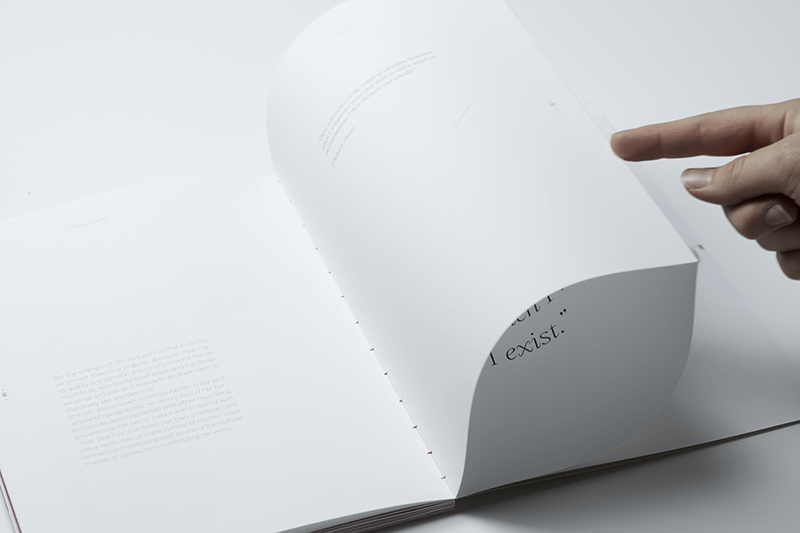

CHIHARU SHIOTA
-
Chiharu shiota est une artiste japonaise, elle créée des installations où le corps du visiteurs est mit a l’épreuve. Il ne peut pas accéder directement à l’installation il est oppressé par l’accumulation d’objets ou de fils. Ainsi, la mise en page joue avec la frustration du lecteur avec le pli afin qu’il soit impliqué dans la lecture. Un des papier utilisé est rugueux, rendant le toucher du livre plus dérangeant.
Papier curious matter white 135g, curious skin white 135g, curious translucent red lacquer 100g, curious skin rouge 135g, impression sérigraphie blanche, reliure dos carré collé à la main.